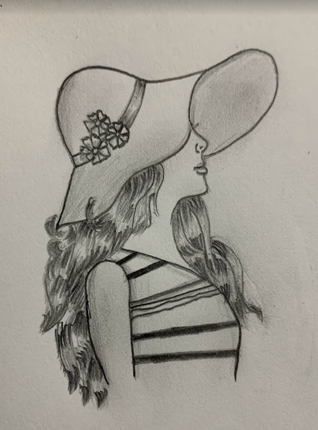
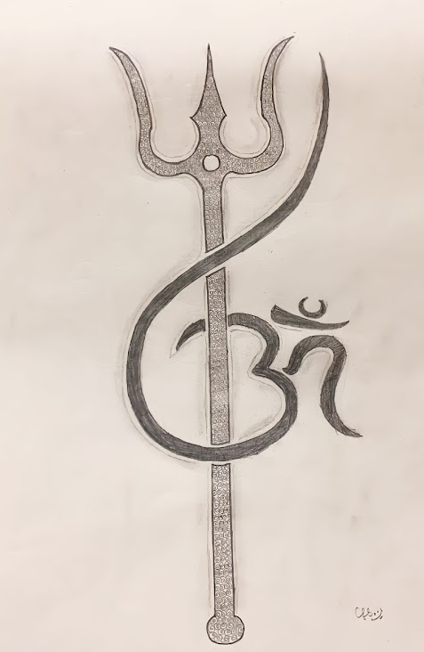
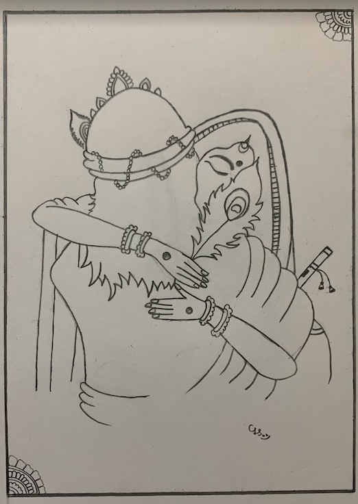
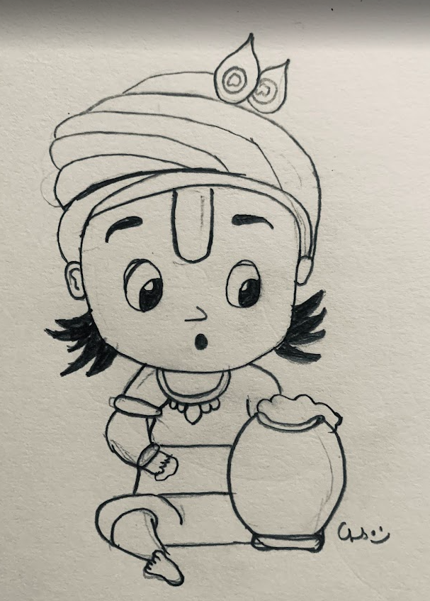
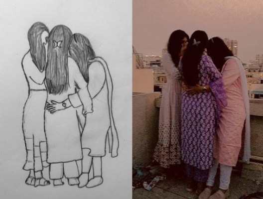
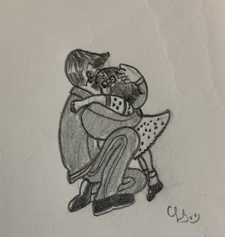
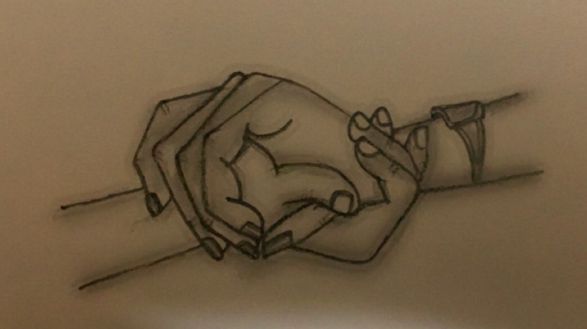
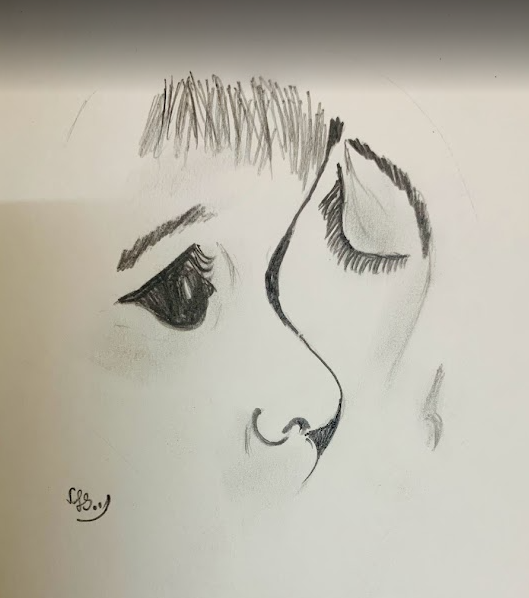
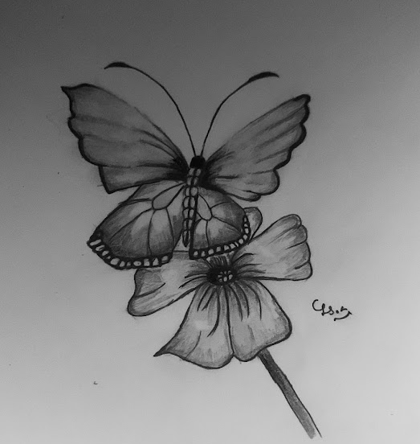
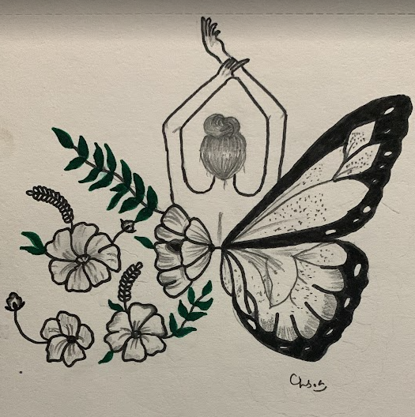

My Art











Hi, I'm Lasya, a passionate Software Engineer currently working at Telstra, with a total of 4 years of experience in the IT industry. I began my professional journey at Tata Consultancy Services (TCS), where I spent over 3 years 6 months specializing as a BMC Remedy Developer and Administrator. My expertise lies in configuring and optimizing ITSM applications, including Incident, Change, Problem, Release, and Work Order Management. I’ve developed and customized workflows, approval mappings, and SLAs to align with business objectives. I’m proficient with tools like Data Management Tools (DMT) and Data Import, enabling efficient data handling and system integration. I’ve also enhanced user experience through customized forms and views in Remedy. Over the years, I’ve been recognized for my contributions, earning accolades such as the "Star of the Month" and the "On the Spot Award" for exceptional performance and commitment. I’m known for my analytical thinking, dedication to quality, and my drive for continuous improvement. Beyond technology, I’m deeply passionate about art, storytelling, and self-expression. I enjoy drawing, watching movies, writing and sharing blogs on Instagram, and exploring spirituality. I live by the motto: “Live and let live,” and follow the principle: “Learn, unlearn, and relearn.” I believe in living a conscious, inspired life every day.
Thoughts on the power of unlearning in today’s fast-changing world and the importance of adaptability.
Read More